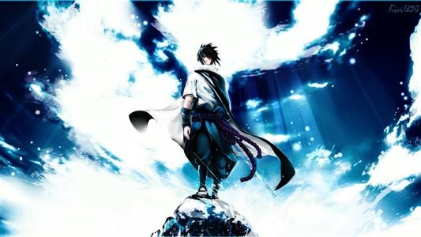
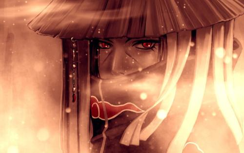
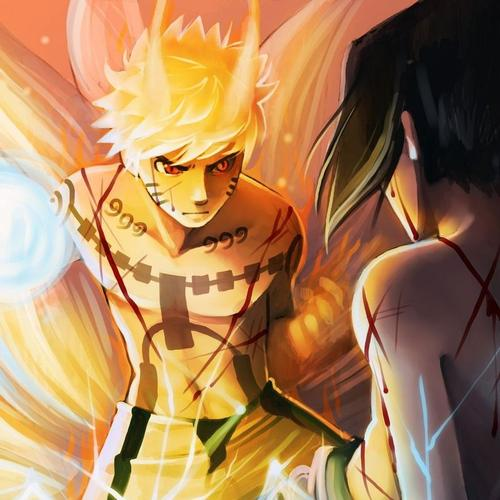
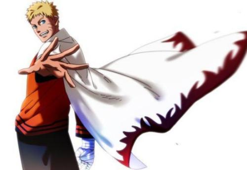

忍者村
关于各个忍村的介绍
-
木叶忍者村
其头目被称之为——火影。由初代火影千手柱间于宇智波•斑共同创建，拥有精锐忍者军团的最强忍者村，全体村民十分团结并拥有许多优秀的忍者，让木叶忍者村变得非常繁荣，而且这也让村民有了在其他国家的民众身上不太容易看到的爱国心。
-
沙隐忍者村
现任风影为第五代---我爱罗，处事风格相对比较极端，不多经过晓事件后在慢慢改变。于木叶为同盟忍村。沙尘飞舞的严苛环境，化为培育忍者的绝佳粮食。
-
岩隐忍者村
被天险包围，以坚固的防守著称忍者村是由许多岩石高山所形成的绝密天然要塞，拥有容易防守的地利，敌人难以攻入其内部，不过同样的，他们要于外界交流也相对的困难起来。
火影九大尾兽
尾兽是具有强大查克拉量的九只妖怪，在故事中因拥有强大力量而对民间造成威胁，故各自被封印在人体内，称之为“人柱力”，早期连载期间，网络上有讹传称九尾拥有无限查克拉量，但作者岸本齐史并未在其任何一本出版书中提过“九尾查克拉无上限”。
一尾守鹤体色土黄，是拥有一条大尾巴形似狸猫的妖怪。一尾最初登场是在中忍考试的时候，作为夺取木叶村的反动形象出现。
《火影忍者》中二尾又旅的形象为一只拥有巨翼的二尾黑色猫妖。出场的时间较短，几乎一笔带过，最后战死。
三尾矶怃是有三条扁尾巴，身上有刺菱的乌龟。三尾出场时是没被封印的，但随后被“晓”组织捕获并封印。
火影中的四尾是拥有四条恐龙状尾巴的红毛猿猴，头上戴着金箍，自称为“水帘洞的美猴王”。它在前期剧情出现少，后期作为中间人使鸣人和九尾的感情更加深厚。
穆王是一只结合了海豚的形象，头长犄角，身垂五尾的白色似马巨兽。前期剧情没出现过，后来被“晓”控制用以与九尾和八尾对战。
其外形却非犬而似蛞蝓，另外，在漫画里由于“蛞蝓”这一名字已被使用过(纲手的通灵兽蛞蝓)，且二者非常相似，故才将六尾的名字改做“犀犬”。
十大尾兽中最为狡猾的是七尾重明，它是一只身着六翅，拖着条长尾巴的巨形怪兽。善伪装，喜掘地，把自己藏身在黏土之中。
八尾牛鬼是一只长着类似章鱼触手尾巴的巨牛，性格狂躁，历任人柱力都无法完全控制它，直到奇拉比的出现。它可以与人柱力配合免疫幻术，用了一条尾巴作为替身骗过了佐助。
这只全身赤红、拥有九条尾巴的妖狐在故事一开始就被封印在鸣人身上，鸣人与九尾的相处从最初的争吵、对立到相互友好，成为伙伴，一起并肩作战对付企图摧毁忍者世界的对手，可以看出主人公鸣人的慢慢成长。
木叶编年史
历年发展曲线
-

- 木叶前8年
- 创造第一个九尾人柱力
- 出生在木叶前期的还活着的人物就这么三位,而且三代火影还在木叶60年的木叶毁灭计划中为村捐躯。但是在那个时间段, 这三位估计没有发挥任何作用, 活跃在这个时代的舞台上的 都是传说中的人物, 初代火影, 二代火影, 宇智波先祖, 四大家族族长等等~~
-

- 木叶16年
- 第一次忍界大战
- 大蛇在木叶毁灭计划的时候50岁，当时木叶建立60年，因此大蛇是木叶10年出生。从344的对话看出来，大蛇当时已经接受三代的指导，大蛇6 岁忍者学校毕业，因此344回忆中的小蛇丸应该是木叶16年的事情。
-

- 木叶27年
- 高速发展的承平时期
- 这一批人，生于战祸肆虐后百业待兴的木叶，童年在惨烈的第二次忍界大战中度过，成年后一边作为木叶中坚投身第三次忍界大战，最后在晓组织即将挑 起的新的战乱面前，这批老而弥坚的木叶高层无疑是村子防卫的中流砥柱，也是小强们在外面撒野的最强大后盾。
-

- 木叶39年
- 传说中的三忍
- 经过10年生息，木叶村进入一个鼎盛期。老一辈的三代火影，团藏，两位参谋正值壮龄，40岁壮龄正是经验和能力最完美的时期，三代的最强火影和忍者博士的身份想必就是在这场战争中奠定的。而当时中生代的三忍和白牙正进入忍者的黄金期
- 火影鸣人